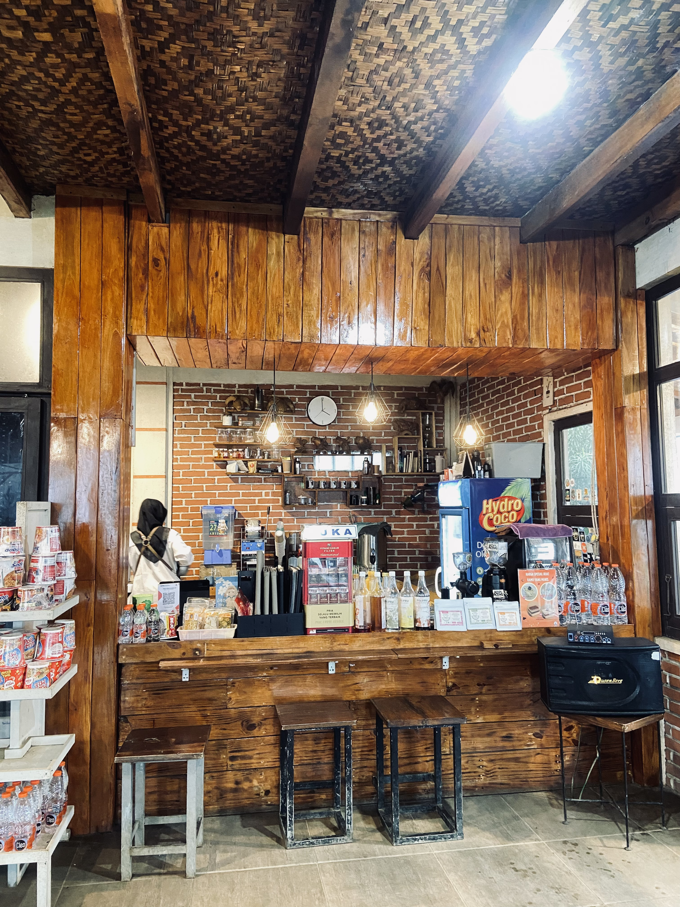

FASILITAS




Terima kasih telah berkunjung ke website ini, nikmati setiap sudut perjalanan ini seolah-olah Anda benar-benar ada di sana.
Masuk Ke Virtual TourSelamat Datang di Virtual Tour Agrowisata Tepas Papandayan
Agrowisata Tepas Papandayan adalah wisata alam yang terletak di Kabupaten Garut, Badan Usaha Milik Desa Keramatwangi yang berlokasi di Kecamatan Cisurupan tepatnya di bawah kaki Gunung Papandayan. Fasilitas utama dari wisata kami yaitu infinity pool dengan view utama Gunung Cikuray dan menyuguhkan golden sunrise.
Jam Operasional: Agrowisata Tepas Papandayan buka setiap hari selama 24 jam. Sementara itu, Cafe dan Resto kami beroperasi setiap hari mulai pukul 05.00 pagi hingga 23.00 malam, siap menyajikan hidangan lezat untuk Anda.
Infinity pool adalah kolam renang yang dirancang sedemikian rupa sehingga memberikan ilusi visual seolah-olah air kolam meluber ke tepi dan menyatu dengan pemandangan di sekitarnya.
Nikmati fasilitas lengkap yang kami sediakan di antaranya area parkir mobil, area parkir motor, kolam renang, kolam onsen, camping ground, glamping, cottage, camp pinus, campervan, kantin, kafe, toilet, ruang ganti baju, dan mushola. Setiap sudut tempat ini dirancang untuk memberikan kenyamanan dan relaksasi, sehingga Anda bisa menikmati waktu bersama keluarga dan teman.
Untuk informasi lebih detail mengenai pemesanan tenda, glamping, ataupun cottage Anda dapat menghubungi WhatsApp di bagian paling bawah website kami. Anda juga dapat melihat lokasi kami melalui Google Maps yang telah kami tampilkan.
Rp 10.000
Termasuk akses ke seluruh area umum, Kolam dan ocen
Rp 3.000
Area parkir motor yang luas, aman, dan terorganisir dengan rapih.
Rp 5.000
Area parkir mobil yang luas dan nyaman, Cocok untuk semua jenis mobil.
Mulai dari Rp 135.000 / malam
Mulai dari Rp 100.000 / malam

Mulai dari Rp 750.000 / malam

Mulai dari Rp 1000.000 / malam
Mulai dari Rp 1.600.000 / malam
Agrowisata Tepas Papandayan terletak di Desa Karamatwangi, Kecamatan Cisurupan, Kabupaten Garut, Jawa Barat. Lokasinya sekitar 15 km dari pusat kota Garut. Untuk mencapai tempat ini, Anda bisa menggunakan kendaraan pribadi atau menyewa transportasi lokal. Akses menuju lokasi ini cukup mudah, dengan jalan beraspal yang baik. Namun, harap diperhatikan bahwa ada beberapa tanjakan curam menjelang tiba di area ini.